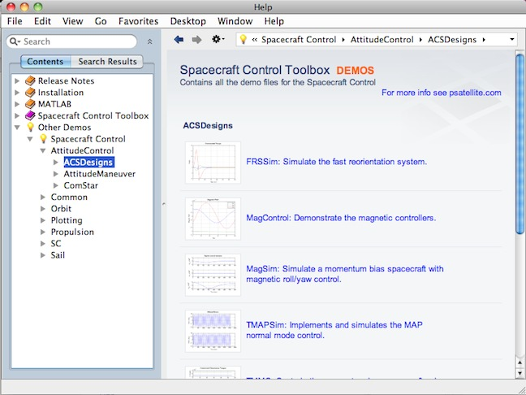
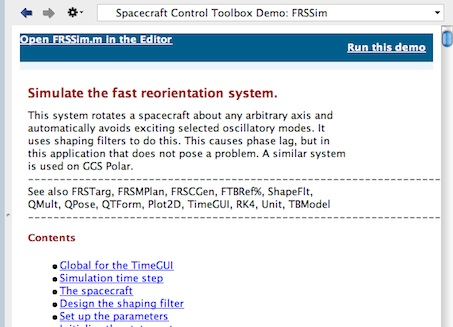
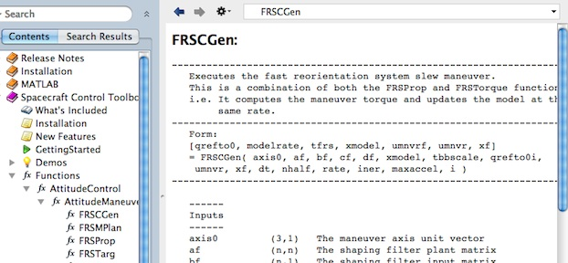
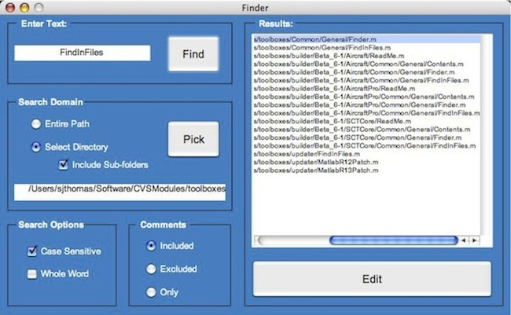
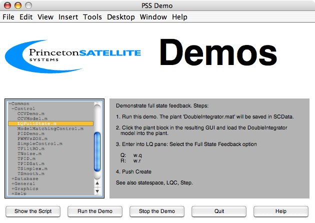
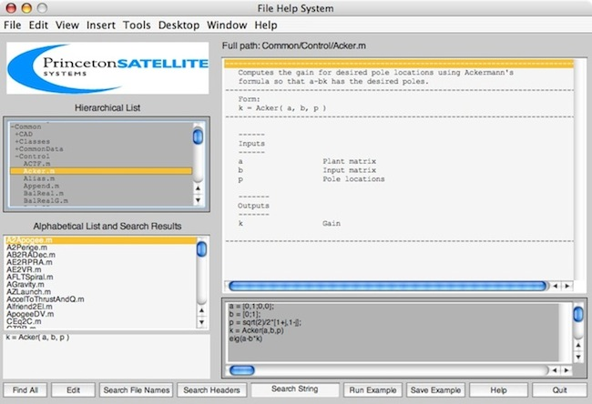

| Getting Started |  |
The first few functions that you should try include Finder, DemoPSS, and FileHelp. These functions provide a graphical way to get an overview of the Spacecraft Control Toolbox. MATLAB's built-in help system can now also be used to browse SCT demos and functions.
Contents
Introductory Demos
Each of these demos combines a CAD model with a simulation script. These simple simulations combine multiple toolbox elements including control laws, visualization, and disturbances.- BuildSatWThrusters and REAControl: these scripts build and simulate a spacecraft, REASat, for analyzing control using thrusters and checking the sun angle of a single sensor. This script does not use the full Thruster model, but calls Simplex using the control command for analyzing the resulting pulsewidth demands. The PSS function PIDMIMO is used to design a control law. The simulation shows how to use two simulation functions, FRB for rigid body dynamics and FOrbCart for simple orbit dynamics.
- BuildXYZSat and Attitude3D: this CAD model script and corresponding simulation are similar to the previous demo but has options for 3D graphics and disturbances and excludes the sensors and actuators. The alternative to the 3D graphics includes our Plot3D function for viewing orbits and AnimQ for animating a quaternion. This CAD model, XYZSat, has color-coded axes to aid the 3D visualization.
Demo Directory
You can access all of the demos right from MATLAB's built in help system. At the bottom of the Contents panel is a heading labeled 'Other Demos' next to a light bulb icon. Expanding this heading will reveal the Spacecraft Control demos directory. Here you can browse all of the demos available in SCT. Below is a picture showing how to locate these demos.

All of the demos are grouped by module and then by folder. Once you select a demo, the individual demo's webpage will open up showing you the code and evaluating each cell as it goes through the demo step-by-step. You can open the demo file for editing by clicking Open (Demo) in the Editor in the top left corner of the webpage. You can also run the demo directly from this page by clicking Run This Demo which is located in the top right corner of the window. Below is a picture of a typical demo webpage.

Function Directory
Much like the Demo Directory, there is also a function directory found in the MATLAB help system. This allows you to browse all of the functions provided by SCT. They are organized by folder depth and grouped together in modules. These functions are completely searchable within MATLAB's search field as well. Once you have picked a function, a page will open showing you the function description as well as any children functions that it might use. Below is a picture illustrating how to navigate and find a certain function.

Finder
Finder is another useful tool to help search through the Spacecraft Control Toolbox. It has a simple GUI that allows you to navigate and find exactly what you are looking for. You simply type into MATLAB prompt:
>> Finder

In the top left corner, you enter your search term. It could be a partial filename, a function to see what files call this function, or even a particular word in a files comment description.
The results appear in the window to the right. Clicking on the Edit button will open the highlighted file for editting.
There are also search options to narrow down your results. This has the ability to search all files and functions, not just those created by Princeton Satellite Systems.
DemoPSS
Each toolbox or module has a Demos folder and a function DemoPSS. Do not move or remove this function from any of your modules! DemoPSS.m looks for other DemoPSS functions to determine where the demos are in the folders so it can display them in the DemoPSS GUI.
If you type DemoPSS you will see the GUI that is pictured below. The list on the left-hand-side is hierarchical and the top level follows the organization of your toolbox modules. Most folders in your modules have matching folders in Demos with scripts that demonstrate the functions. The GUI checks to see which directories are in the same directory as DemoPSS and lists all directories and files. This allows you to add your own directories and demo files.
>> DemoPSS

Click on the first name to open the directory. The + sign changes to - and the list changes. The figure above shows the Common/Control folder in the core toolbox. The hierarchical menu shows the highest level folders. Your own demos will appear if they are put in any of the Demos folders. If you would like to inspect, or edit, the script, push Show the Script
FileHelp
The FileHelp function provides a graphical interface to the MATLAB function headers. You can peruse the functions by folder to get a quick sense of your new product's capabilities and search the function names and headers for keywords.
You can get help for any function by typing
>> FileHelp

There are five main panes in the window. On the left hand side is a display of all functions in the toolbox arranged in the same hierarchy as the PSSToolboxes folder. Scripts, including most of the demos, are not included. Below the hierarchical list is a list in alphabetical order by module. On the right-hand-side is the header display pane. Immediately below the header display is the editable example pane. To its left is a template for the function. You can cut and paste the template into your own functions.
The buttons along the bottom provide additional controls along with the search feature. Select the "Search String" text and replace it with your own text, for example "sun". Then click either the Search File Names button or Search Headers.
| The List Pane: | If you click a file in the alphabetical or hierarchical lists, the header will appear in the header pane. This is the same header that is in the file. The headers are extracted from a .mat file so changes you make will not be reflected in the file. In the hierarchical list, any name with a + or - sign is a folder. Click on the folders until you reach the file you would like. When you click a file, the header and template will appear. |
| Edit Button: | This opens the MATLAB edit window for the function selected in the list. |
| The Example Pane: | This pane gives an example for the function displayed. Not all functions have examples. The edit display has scroll bars. You can edit the example, create new examples and save them using the buttons below the display. To run an example, push the Run Example button. You can include comments in the example by using the percent symbol. |
| Run Example Button: | Run the example in the display. Some of the examples are just the name of the function. These are functions with built-in demos. Results will appear either in separate figure windows or in the MATLAB Command Window. |
| Save Example Button: | Save the example in the edit window. Pushing this button only saves it in the temporary memory used by the GUI. You can save the example permanently when you Quit. |
| Help Button: | Opens the on-line help system. |
| Quit: | Quit the GUI. If you have edited an example, it will ask you whether you want to save the example before you quit. |
Searching In File Help
| Search String Edit Box: |
| This is the search string. Spaces will be matched so if you type attitude control it will not match attitude control (with two spaces.) |
| Search File Names Button: |
| Searches file names for matches with the string in the Search String Edit Box. |
| Search Headers Button: |
| Search headers for a string. This function looks for exact, but not case sensitive, matches. The file display displays all matches. A progress bar gives you an indication of time remaining in the search. |
| Find All Button: |
| Find All returns to the original list of the functions. This is used after one of the search options has been used. |